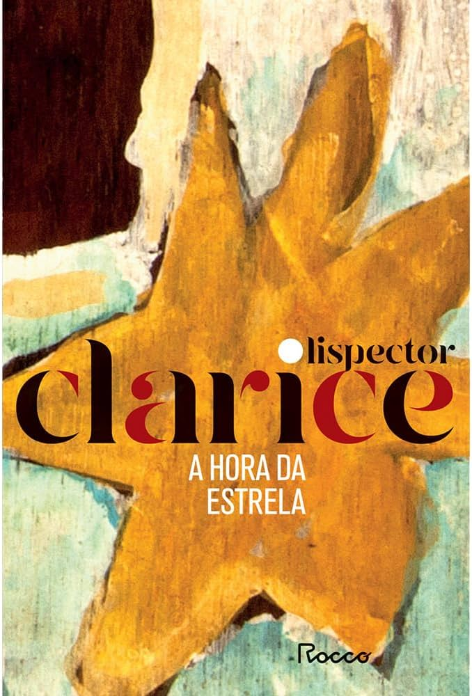
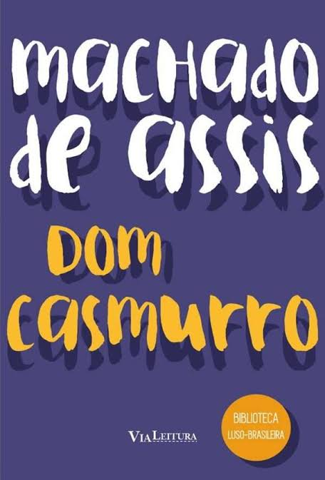
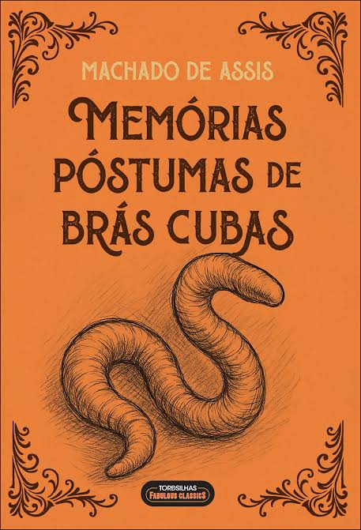
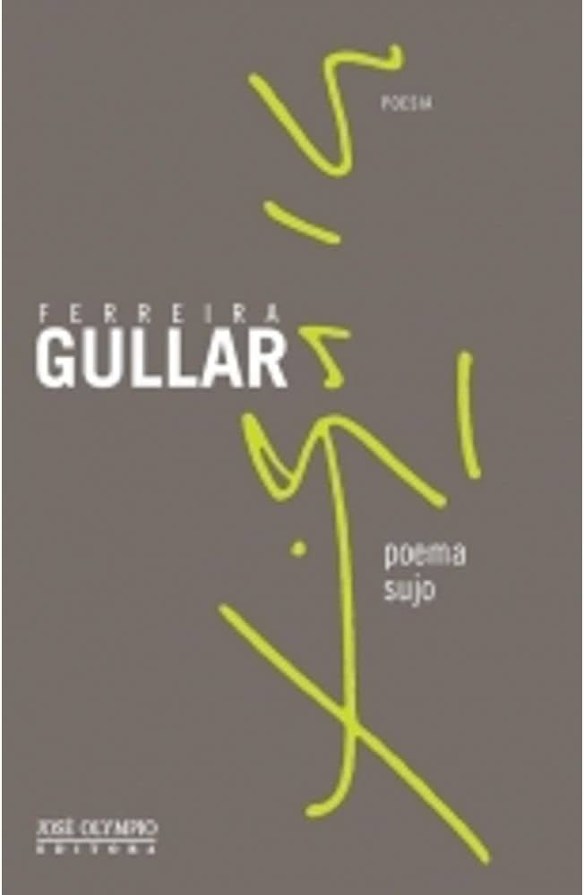
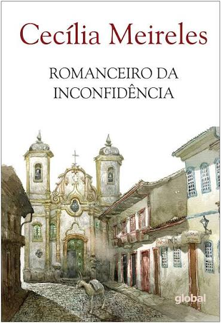
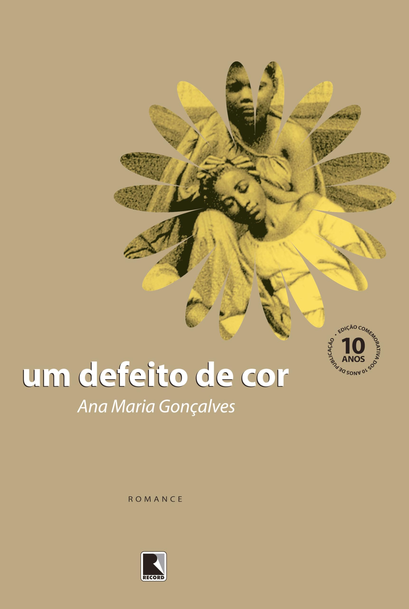

Literatura nacional

A Hora da Estrela
Clarice Lispector apresenta a história de Macabéa, uma jovem nordestina que enfrenta dificuldades no Rio de Janeiro.

A Paixão Segundo G.H.
Uma narrativa filosófica de Clarice Lispector sobre identidade, existência e transformação pessoal.
Alguma Poesia
Livro de estreia de Carlos Drummond de Andrade, publicado em 1930, com poemas sobre o cotidiano.

Dom Casmurro
Machado de Assis apresenta uma história marcada por ciúme, desconfiança e memória.

Memórias Póstumas de Brás Cubas
Um narrador já falecido conta sua vida com ironia e humor, em uma das grandes obras de Machado de Assis.
Grande Sertão: Veredas
Guimarães Rosa apresenta as lembranças de Riobaldo e suas reflexões sobre amor, destino e existência.

O Cortiço
Aluísio Azevedo retrata a vida dos moradores de um cortiço e as desigualdades sociais.

O Avesso da Pele
Jeferson Tenório aborda racismo, identidade, memória e relações familiares.

Torto Arado
Itamar Vieira Junior conta a história de duas irmãs no sertão da Bahia.

Vidas Secas
Graciliano Ramos retrata uma família de retirantes que enfrenta a seca e a pobreza.

A Educação pela Pedra
João Cabral de Melo Neto apresenta poemas marcados pelo rigor formal, pela objetividade e por reflexões sobre a realidade brasileira.

Poema Sujo
Ferreira Gullar reúne memórias da infância, lembranças de São Luís e reflexões sobre a vida, a política e a liberdade.

Romanceiro da Inconfidência
Cecília Meireles reconstrói poeticamente acontecimentos da Inconfidência Mineira, misturando história, memória e poesia.

Um Defeito de Cor
Anna Maria Gonçalves narra a trajetória de Kehinde, uma mulher africana escravizada que luta por liberdade e pela reconstrução de sua história.